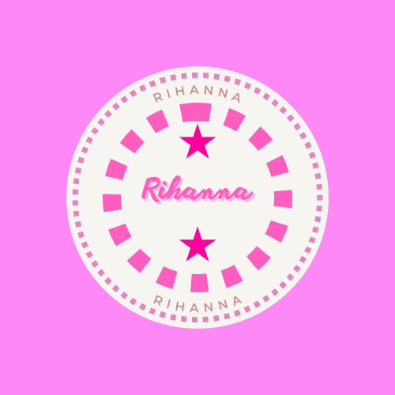
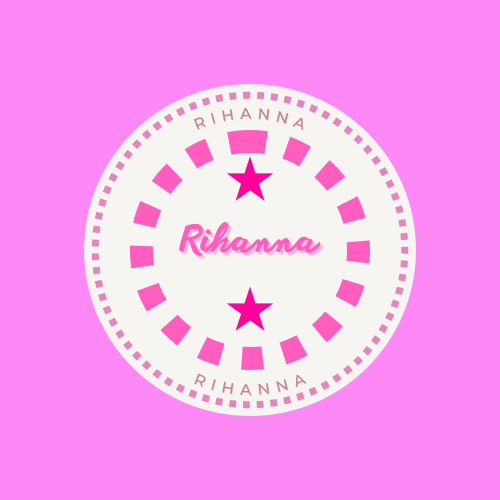

.svg)
.svg)
.svg)
Los influencers de belleza son personas que tienen una presencia destacada en las redes sociales y que compraten contenido relacionado con el mundo de la belleza,
incluyendo maquillaje,cuidado de la piel,cabello,moda y productos de belleza.
Estas personas han ganado seguidores debido a su experiencia en el campo de la belleza, su habilidad para crear los looks mas atractivos,su capacidad para realizar reseñas de productos y,a menudo, por su carisma en camrara.
Los influencers de belleza a menudo intentan transmitir diferentes mensajes y valores a su audiencia, que pueden incluir:
tutoriales y consejo,reseñas de productos,inspiracion,empoderamiento,promocion de productos.
En cuanto a los tipos de influencers de belleza, hay una variedad de nichos dentro de esta categoria, que incluyen:
Maquilladores profesional,Gurus de la cuidado de la piel,Gurus del cabello,Influencers de moda y belleza,Influencers de estilo de vida.
Estos son solo algunos ejemplos,y la industria de los influencers de belleza es diversa y en constante evoloucion,con nuevos talentos y enfonques que surgen regularmenteen las redes sociales.
Algunos influencers de belleza populares son James Charles, Huda Kattan, Jeffree Star y Michelle Phan.
Estos influencers suelen compartir consejos de maquillaje, reseñas de productos de belleza y tutoriales en plataformas como Instagram, YouTube y otras redes sociales.
Ten en cuenta que la industria de la belleza es amplia, y hay muchos influencers especializados en diferentes aspectos, desde maquillaje hasta cuidado de la piel.
Algunos ejemplos de influencers de belleza serian:
.svg)
.svg)
.svg)
Si te enteresan algunos tutoriales aqui te ofrecemos algunos
.svg) 

.svg)
.svg)